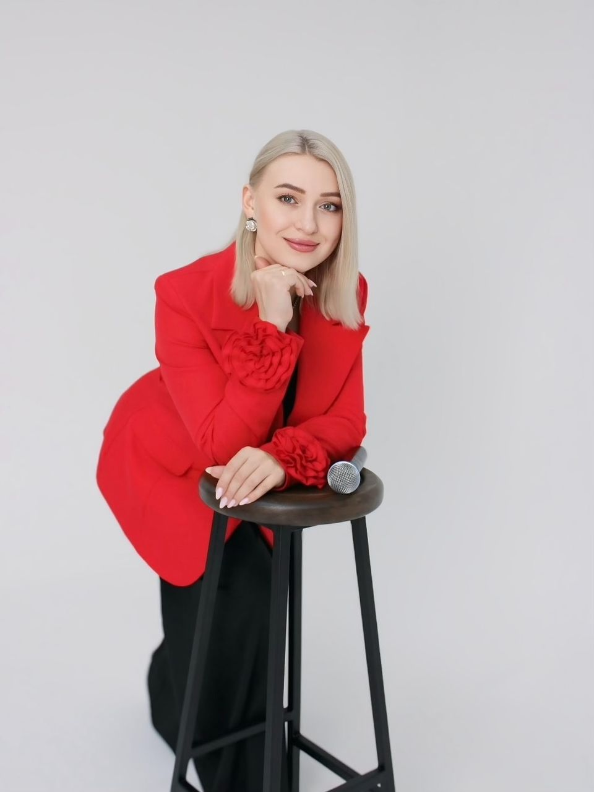
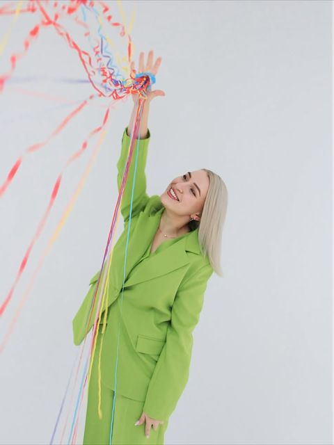
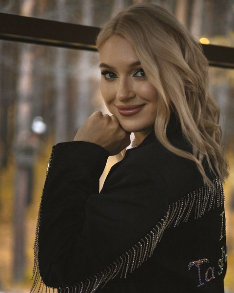
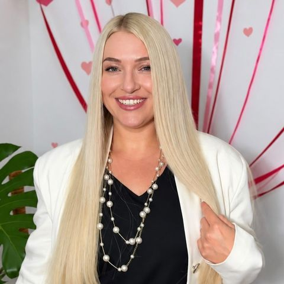

Свадьба
Ведущая на свадьбу в Анапе: от встречи молодых до последнего танца. Трогательно там, где нужно, и весело — там, где хочется.
Анапау моря
Свадьбы, юбилеи, корпоративы и дни рождения — с живыми эмоциями, искренним смехом и без показного глянца. Веду в паре с мужем-диджеем и пою для ваших гостей.

Провожу торжества в Анапе, Новороссийске, Витязево, Джемете, Сукко и Благовещенской. Каждый вечер собираю под конкретных людей — без шаблонных конкурсов, которые всем надоели.
Ведущая на свадьбу в Анапе: от встречи молодых до последнего танца. Трогательно там, где нужно, и весело — там, где хочется.
Тёплый вечер для юбиляра и гостей всех возрастов: с историями, песнями и моментами, которые потом пересматривают всей семьёй.
Новый год, день компании, профессиональный праздник. Расшевелю даже тех, кто «просто посидит в сторонке».
Камерно или с размахом — праздник, где именинник чувствует себя главным, а не зрителем.
Вечер, который хочется запомнить: трогательные слова, танцы и энергия, от которой не устаёшь.
Гендер-пати, годовщина, семейный праздник, вечер-сюрприз. Расскажите идею — придумаем, как её прожить.
а ещё я пою 🎤
Я веду, мой муж стоит за пультом. Мы понимаем друг друга с полувзгляда, поэтому праздник звучит и чувствуется так, как задумано.
Своя аппаратура, проверенный звук, отработанная программа. Никаких «ой, микрофон не работает».
Музыка подхватывает каждое слово ведущей: паузы, выходы, сюрпризы — всё в один такт.
Песня для юбиляра, для молодых или просто для гостей — от неё у зала мурашки.
Не нужно искать и стыковать разных подрядчиков. Поэтому можем предложить приятную цену за всё вместе.
Мне всегда ближе настоящее. Живые эмоции, искренний смех, неловкие моменты, которые потом становятся самыми тёплыми воспоминаниями. Люди на празднике чувствуют фальшь моментально — поэтому я без масок и без глянца. Самые красивые события — не идеальные. А настоящие.
— Ира ❤
За кулисами детского сада и школьного актового зала у меня замирало сердце: шуршание пышного платья, яркий свет софитов. Это было самым радостным моментом детства — тогда я и не знала, что репетирую свою будущую жизнь.
Теперь софиты стали больше, залы — громче, а платья превратились в костюмы 😄 Но чувство ожидания чуда и энергия зала остались прежними. Только теперь я не просто выступаю — я создаю это чудо для других.
Я переехала из Иркутска в Анапу и честно рассказываю о работе, переезде и жизни у моря в своём Instagram. Сибирская душевность + южное солнце — вот такой у меня характер на сцене.


Простой путь от первого сообщения до последнего трека — как сет-лист, по которому играет ваш вечер.
Дата, место, формат и количество гостей. Сразу проверяю, свободен ли день.
Встречаемся или созваниваемся. Узнаю о героях праздника, гостях, о том, что вы любите и чего точно не хотите.
Пишу программу под ваших людей: сюрпризы, интерактивы, музыку, место для песни.
Приезжаем заранее, ставим звук, и дальше вы просто отдыхаете. Ни о чём не думаете — за всё отвечаем мы.
Остаются эмоции, фото и видео — и желание «всё повторить».

«Каждый день мы делаем выбор. Выбирайте то, что откликается сердцу — и не откладывайте счастье на потом»
Настоящие сообщения от заказчиков — переписали из чатов слово в слово, только убрали лишние смайлики.
Праздники — моя сцена, а путешествия — вторая любовь. Подбираю туры так же, как готовлю вечер: под конкретных людей, их бюджет и настроение.
Не нашли ответ — просто напишите, отвечу лично.
Живу в Анапе и провожу мероприятия в Анапе, Новороссийске и посёлках побережья — Витязево, Джемете, Сукко, Благовещенской. О выезде в другие города договоримся отдельно.
Да. Мой муж — диджей, мы работаем в паре со своей аппаратурой и проверенным звуком. Отдельно искать и сводить подрядчиков не нужно.
Стоимость зависит от даты, длительности, формата и того, нужен ли диджей и живой вокал. Напишите в Instagram или ВКонтакте — пришлю расчёт под ваш праздник.
Да, живой вокал — часть программы по желанию: песня-сюрприз для юбиляра, для молодых или для гостей.
Нет. Интерактивы подбираю под ваших гостей после знакомства. Если вы чего-то не хотите — этого не будет.
Да, я работаю турагентом в Анапе и Новороссийске: подберу путешествие под ваш бюджет и пожелания, помогу с оформлением и буду на связи во время поездки.
Напишите дату и формат — проверю, свободен ли день, и расскажу, как сделаем ваш вечер настоящим.